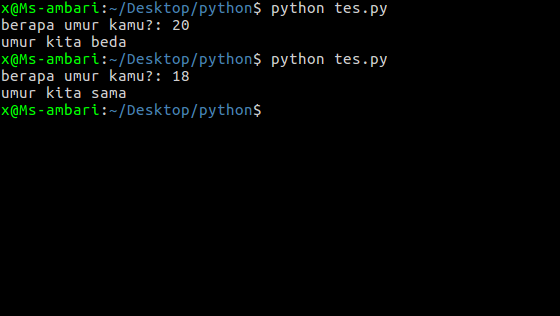
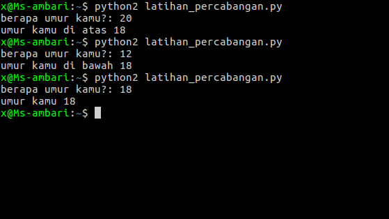

apa itu percabangan ?
i
biar cepat paham, mari kita latihan.
umur = input ("berapa umur kamu?: " )
if umur == 18 :
# kondisi pertama
print "umur kita sama"
else :
# kondisi kedua
print "umur kita beda"
Hasilnya:

apa artinya?, artinya jika inputan umur sama dengan 18 maka akan masuk ke kondisi pertama,jika tidak, maka akan masuk ke kondisi kedua
percabangan
umur = input ("berapa umur kamu?: " )
if umur > 18 :
# jika umur lebih besar dari 18, maka akan masuk kesini
print "umur kamu di atas 18"
elif umur < 18 :
# jika umur lebih kecil dari 18, maka akan masuk kesini
print "umur kamu di bawah 18"
else :
# jika kedua kondisi di atas tidak terpenuhi, maka akan masuk kesini
print "umur kamu 18"
Hasilnya:

jika kondisi pertama tidak terpenuhi, maka ia akan mengecek kondisi kedua, jika kondisi kedua tidak cocok juga, maka akan masuk kebagian else